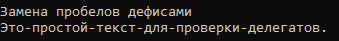
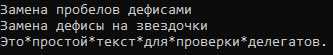
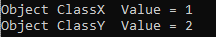

Делегаты
delegate string StrMod(string str);
public static class DelegatTest
{
public static string ReplaceSpaces(string s)
{
Console.WriteLine("Замена пробелов дефисами");
return s.Replace(' ', '-');
}
public static void Test()
{
StrMod pSpaces = new StrMod(ReplaceSpaces);
string str = pSpaces("Это простой текст для проверки делегатов.");
Console.WriteLine(str);
}
}
В результате:

Групповое преобразование делегируемых методов
Без использования конструктора new
public static void Test()
{
StrMod pSpaces = ReplaceSpaces;
string str = pSpaces("Это простой текст для проверки делегатов.");
Console.WriteLine(str);
}
Применение методов экземпляра в качестве делегатов
В данном примере класс не статический. Результат будет тот же.
delegate string StrMod(string str);
class StringOps
{
public string ReplaceSpaces(string s)
{
Console.WriteLine("Замена пробелов дефисами");
return s.Replace(' ', '-');
}
}
class DelegatTest
{
public void Test()
{
StringOps so = new StringOps();
StrMod pSpaces = so.ReplaceSpaces;
string str = pSpaces("Это простой текст для проверки делегатов.");
Console.WriteLine(str);
}
}
Групповая адресация
Используется ref для получения результата. (методы ничего не возвращают)
delegate void StrMod(ref string str);
class DelegatTest
{
public void ReplaceSpaces(ref string s)
{
Console.WriteLine("Замена пробелов дефисами");
s = s.Replace(' ', '-');
}
public void ReplaceHyphen(ref string s)
{
Console.WriteLine("Замена дефисы на звездочки");
s = s.Replace('-', '*');
}
public void Test()
{
StrMod strOp;
StrMod replaceSp = ReplaceSpaces;
StrMod replaceHy = ReplaceHyphen;
strOp = replaceSp;
strOp += replaceHy;
string str = "Это простой текст для проверки делегатов.";
strOp(ref str);
Console.WriteLine(str);
}
}
В результате:

Ковариантность и контравариантность
В частности, ковариантность позволяет присвоить делегату метод, возвращаемым типом которого служит класс, производный от класса, указываемого в возвращаемом типе делегата. А контравариантность позволяет присвоить делегату метод, типом параметра которого служит класс, являющийся базовым для класса, указываемого в объявлении делегата.
class ClassX
{
public int Val;
}
class ClassY : ClassX { }
delegate ClassX ChangeIt(ClassY obj);
class DelegatTest
{
static ClassX IncrA(ClassX obj)
{
ClassX temp = new ClassX();
temp.Val = obj.Val + 1;
return temp;
}
static ClassY IncrB(ClassY obj)
{
ClassY temp = new ClassY();
temp.Val = obj.Val + 2;
return temp;
}
public void Test()
{
ClassY objY = new ClassY();
ChangeIt change = IncrA;
ClassX objX = change(objY);
Console.WriteLine("Object ClassX Value = " + objX.Val);
change = IncrB;
objY = (ClassY) change(objY);
Console.WriteLine("Object ClassY Value = " + objY.Val);
}
}
Пример использования
DelegatTest dTest = new DelegatTest();
dTest.Test();
В результате:

Created with the Personal Edition of HelpNDoc: iPhone web sites made easy